C.2 철근콘크리트 보의 휨 거동 비교
실험 비교. 사용자가 제공한 RC 보의 LC1·LC2 실험을 보요소와 2D·3D 연속체 모델로 비교한다. 기존 C-RCBeam- 예제를 확장하여 대체한 사례이다. 실험 Excel의 하중과 도면의 \(P/2\) 관계는 최종 확인이 남아 있으므로, 현재 수치를 실험 재현 검증 완료로 판정하지 않는다.
시험체와 모델
경간 3,000 mm, 폭 200 mm, 높이 300 mm의 대칭 4점 휨 시험이다. 지점–가력점 거리는 LC1 1,050 mm, LC2 600 mm이다.
| 모델 | 구성 |
|---|---|
| 보요소 | 전경간 16개 B2D2H, 기존 M2 콘크리트·철근 단면 |
| 2D 연속체 | 반경간 CPS4, 30×12분할, 완전부착 매입철근 |
| 3D 연속체 | 반경간 C3D8, 30×12×4분할, 완전부착 매입철근 |
연속체의 주 비교에는 스터럽을 포함하고 콘크리트 상면 절점에 가력한다. 실제 가력판·접촉과 스터럽의 3D 구속효과는 별도로 모델링하지 않는다. 동일 시험체의 모델 간 비교이며 세 모델의 콘크리트 구성식이 모두 같다는 뜻은 아니다.
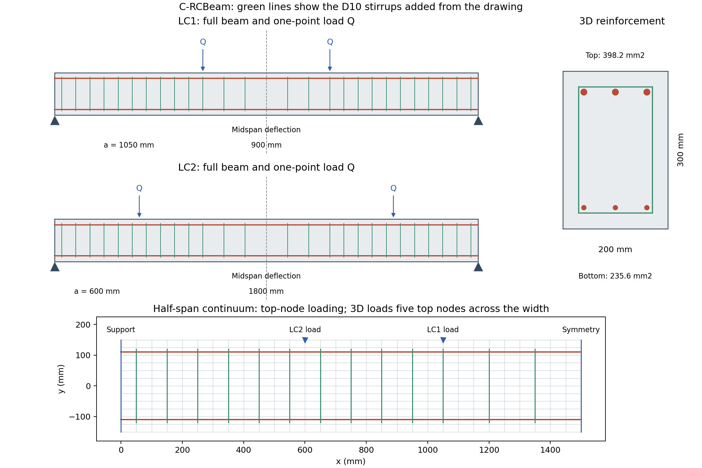
Figure C.2.1 RC Beam Geometry and Model Assumptions하중–처짐 비교
| 조건 | 실험 기록의 최대하중 | beam | 2D | 3D |
|---|---|---|---|---|
| LC1 | 25.773 kN | 30.687 kN | 27.747 kN | 28.559 kN |
| LC2 | 50.983 kN | 51.587 kN | 47.626 kN | 49.049 kN |
하중은 현재 후처리의 한 가력점 기준이다. RMSE 비교 구간은 중앙 처짐 LC1 0–60 mm, LC2 0–40 mm이다. 상면 가력의 스터럽 유무 8건은 모두 지정 범위를 완료했고 연속체의 반력 불평형은 0.008% 미만이다.
LC1 초기 강성과 최대하중 이후 경로에는 실험과 차이가 남는다. 스터럽·점성·압축곡선 말단의 이전 민감도 비교와 현재 상면 가력 결과를 구분한다.
상면 가력의 전체 완료 결과
보요소 2건과 스터럽 포함·미포함 연속체 8건을 모두 비교한다. 목표 가력점 변위는 LC1 60 mm, LC2 40 mm이며 아래 최대점 위치는 **중앙 처짐**이다. 가력점 변위와 중앙 처짐은 같지 않다. nols는 스터럽 포함 3D에서 선탐색 없이 Newton을 사용한 입력이다.
Table C.2.1 All Completed Beam and Top-Loaded Continuum Analyses
| 입력 | 최대 한 점 하중 (kN) | 최대점 중앙 처짐 (mm) | 실험곡선 RMSE (kN) | 증분 / cutback |
|---|---|---|---|---|
| beam-lc1-m2 | 30.687 | 70.875 | 3.850 | 231 / 8 |
| solid2d-lc1-m2-ties-topload | 27.747 | 42.918 | 2.802 | 425 / 21 |
| solid2d-lc1-m2-topload | 26.379 | 13.238 | 9.622 | 620 / 28 |
| solid3d-lc1-m2-ties-nols-topload | 28.559 | 71.683 | 3.080 | 284 / 4 |
| solid3d-lc1-m2-topload | 27.985 | 70.167 | 2.956 | 301 / 9 |
| beam-lc2-m2 | 51.587 | 69.064 | 1.818 | 207 / 0 |
| solid2d-lc2-m2-ties-topload | 47.626 | 31.257 | 1.804 | 335 / 28 |
| solid2d-lc2-m2-topload | 37.519 | 9.419 | 24.484 | 570 / 22 |
| solid3d-lc2-m2-ties-nols-topload | 49.049 | 68.025 | 1.860 | 211 / 4 |
| solid3d-lc2-m2-topload | 48.571 | 52.996 | 1.795 | 391 / 11 |
상면 가력 전체 수치 CSV에는 최종 변위, 반력 불평형, 인장·압축 소성변형률, 압축 손상과 철근 응력도 포함한다. 그림의 점선은 원 압축표 마지막 점 이후 강도·손상을 일정하게 연장한 구간이다.
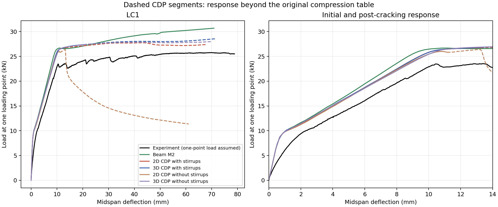
Figure C.2.2 LC1: Experiment, Beam and Continuum Models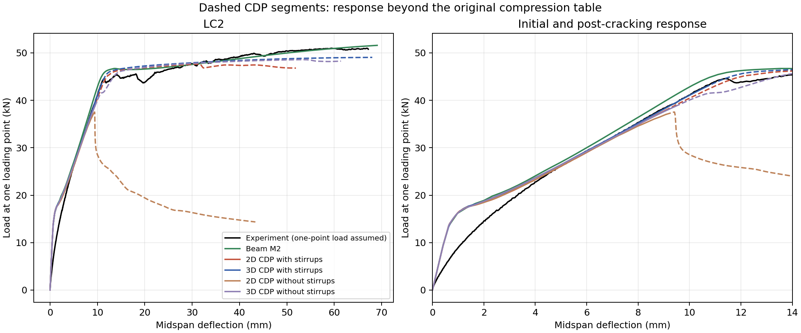
Figure C.2.3 LC2: Experiment, Beam and Continuum Models재료 대응과 탄성 검산
M2 콘크리트의 탄성계수는 29,164 MPa, 포아송비는 0.2, 인장강도는 1.9701 MPa이다. Maekawa 인장 포락선을 전체 변형률에서 CDP 소성변형률 축으로 바꿔 입력했다.
압축은 MPPCEnv·MPPCIE의 강도와 잔류변형률을 대응시켰다. 초기 항복강도는 16.156 MPa, 최대강도는 40.39 MPa이며 원 표는 전체 압축변형률 0.004까지이다. CDP의 마지막 점 이후 일정한 강도와 원 MPPC의 0강도 절단은 다르다.
일축 인장·압축은 각각 512증분, cutback 0으로 완료했다. 포락선 대비 최대 상대 응력 오차는 인장 0.5819%, 압축 0.0768%이고 횡응력은 \(10^{-6}\) MPa 미만이다. 철근은 하부 면적 235.6 mm²·항복강도 418.68 MPa·후항복 기울기 4,870.3 MPa, 상부 면적 398.2 mm²·항복강도 492.3 MPa·완전소성 입력을 유지했다.
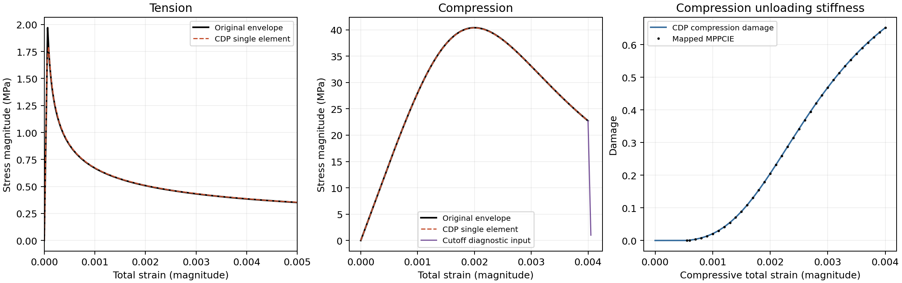
Figure C.2.4 Actual Uniaxial Responses and Original M2 Material Laws탄성 검산은 초기 단면 가력 모델의 첫 증분과 환산단면 강성으로 비교했다. 보요소 강성 오차는 LC1 +0.0030%, LC2 +0.0023%이며, 연속체는 스터럽 유무를 포함해 LC1 −1.294∼−1.006%, LC2 −1.101∼−0.830%이다. 일축 검산 CSV와 10개 초기 탄성 검산 CSV에 전 조건의 수치를 보존한다.
초기 단면 전체 가력의 완료 결과
초기 모델은 가력 단면 높이 전체에 같은 수직 변위를 부과했다. 상면 가력 모델과 재료·메시·철근은 같지만 추가 구속이 다르므로 아래 결과는 초기 모델의 기록으로 비교한다. 보요소 2건은 Table C.2.1과 공통이다.
Table C.2.2 All Completed Continuum Analyses with Section-Wide Loading
| 입력 | 최대 한 점 하중 (kN) | 최대점 중앙 처짐 (mm) | 실험곡선 RMSE (kN) | 증분 / cutback |
|---|---|---|---|---|
| solid2d-lc1-m2-ties | 28.954 | 63.371 | 3.190 | 398 / 27 |
| solid2d-lc1-m2 | 28.157 | 58.776 | 3.024 | 518 / 20 |
| solid3d-lc1-m2-ties-nols | 29.388 | 73.159 | 3.155 | 288 / 7 |
| solid3d-lc1-m2 | 27.988 | 69.069 | 2.906 | 316 / 10 |
| solid2d-lc2-m2-ties | 49.631 | 67.944 | 1.732 | 393 / 20 |
| solid2d-lc2-m2 | 36.743 | 9.202 | 24.144 | 497 / 20 |
| solid3d-lc2-m2-ties-nols | 48.968 | 70.778 | 1.884 | 245 / 5 |
| solid3d-lc2-m2 | 48.096 | 39.065 | 1.830 | 407 / 8 |
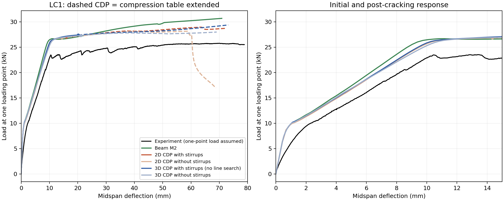
Figure C.2.5 LC1: All Completed Models with Section-Wide Loading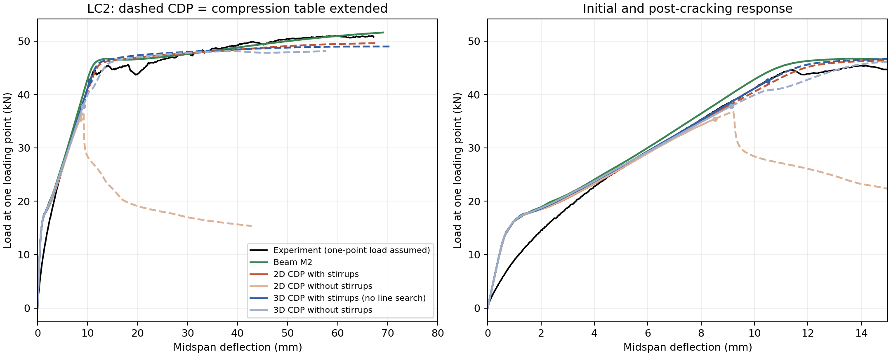
Figure C.2.6 LC2: All Completed Models with Section-Wide LoadingLC1 점성·압축 말단 민감도
초기 단면 가력의 2D 모델에서 점성만 \(10^{-5}\)에서 \(5\times10^{-6}\)으로 낮추거나 압축 말단만 바꾼 4건도 모두 목표 가력점 변위 60 mm까지 완료했다. 압축 절단 근사는 전체 변형률 0.004∼0.00405에서 강도를 22.7106 MPa에서 1.00975 MPa로 낮추고 이후 유지한다. 원 MPPC의 완전한 0강도 절단과 같지는 않다.
Table C.2.3 Completed Viscosity and Compression-Tail Sensitivity Analyses
| 입력 | 최대 하중 (kN) | 최대점 처짐 (mm) | 실험 RMSE (kN) | 기본 곡선 대비 RMSE / 최대 차이 (kN) | 증분 / cutback |
|---|---|---|---|---|---|
| solid2d-lc1-m2-lowvisc | 26.084 | 10.851 | 10.622 | 13.119 / 17.593 | 480 / 27 |
| solid2d-lc1-m2-cutoff | 28.004 | 38.322 | 4.970 | 5.227 / 14.593 | 512 / 37 |
| solid2d-lc1-m2-ties-lowvisc | 28.601 | 69.484 | 3.161 | 0.162 / 0.386 | 538 / 21 |
| solid2d-lc1-m2-ties-cutoff | 28.163 | 36.996 | 2.844 | 0.764 / 2.839 | 519 / 55 |
비교 구간은 중앙 처짐 0∼60 mm이다. 스터럽 없는 모델은 점성을 낮췄을 때 이후 경로가 크게 달라지며, 스터럽 포함 모델의 점성 차이는 작지만 압축 말단의 영향은 남는다. 이 수치를 상면 가력 모델의 민감도로 읽지 않는다.
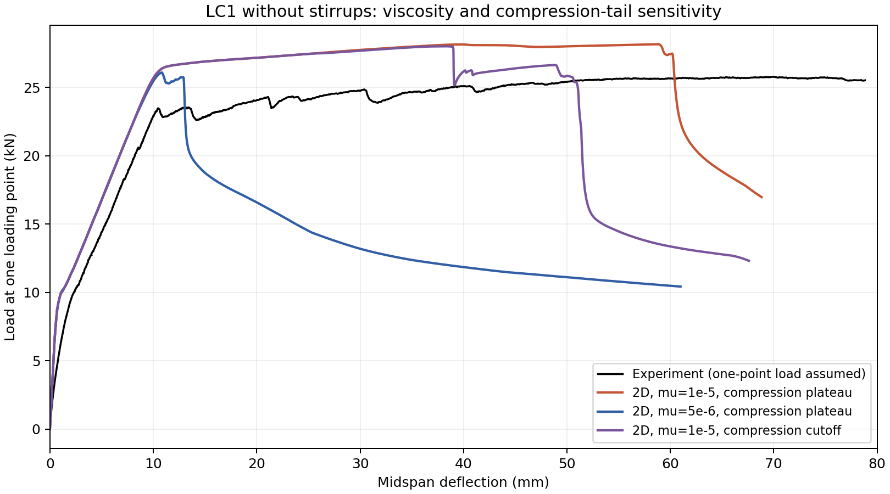
Figure C.2.7 LC1 without Stirrups: Viscosity and Compression-Tail Sensitivity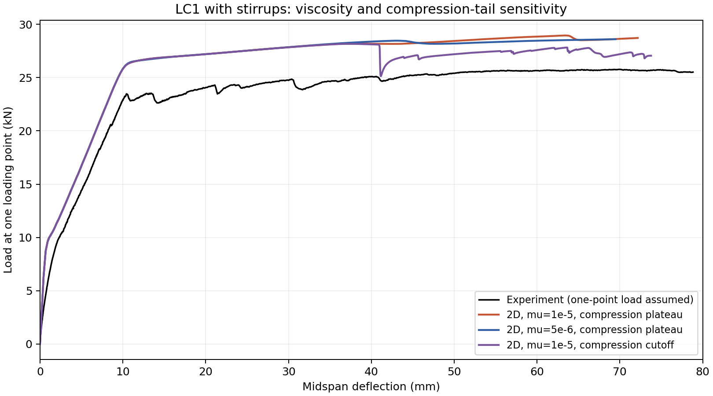
Figure C.2.8 LC1 with Stirrups: Viscosity and Compression-Tail Sensitivity초기 단면 가력·민감도 전체 수치, 스터럽 없는 민감도 차이, 스터럽 포함 민감도 차이를 함께 확인한다.
최대 수렴 하중 시점의 장 결과
완료한 연속체 20건의 인장 등가소성변형률과 압축 손상 분포를 모두 싣는다. 각 그림은 해당 계산에서 최대 수렴 하중을 기록한 시점의 요소별 적분점 평균이며 3D는 폭 중앙쪽 요소층이다. 실험의 균열지도·균열폭과 정량 비교한 결과는 아니다.
상면 가력 LC1
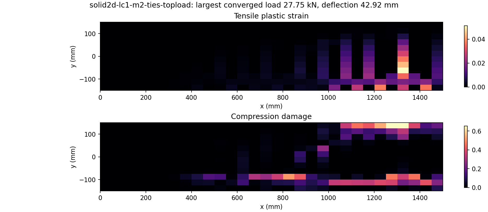
Figure C.2.9 LC1 Top Loading: 2D with Stirrups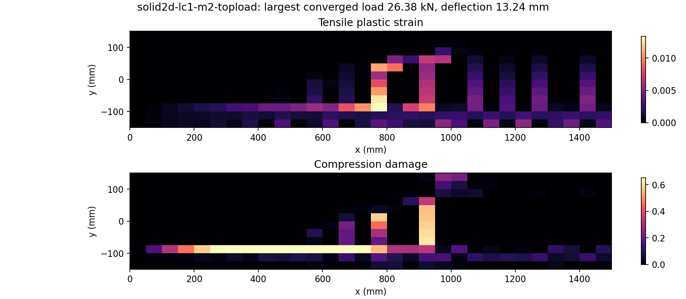
Figure C.2.10 LC1 Top Loading: 2D without Stirrups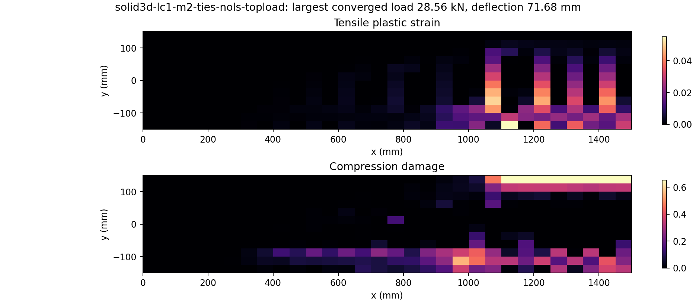
Figure C.2.11 LC1 Top Loading: 3D with Stirrups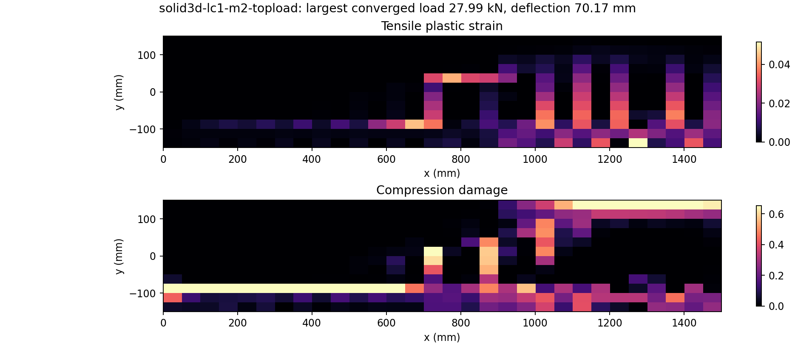
Figure C.2.12 LC1 Top Loading: 3D without Stirrups상면 가력 LC2
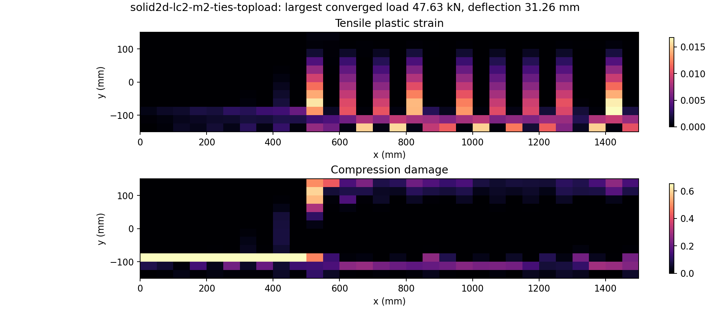
Figure C.2.13 LC2 Top Loading: 2D with Stirrups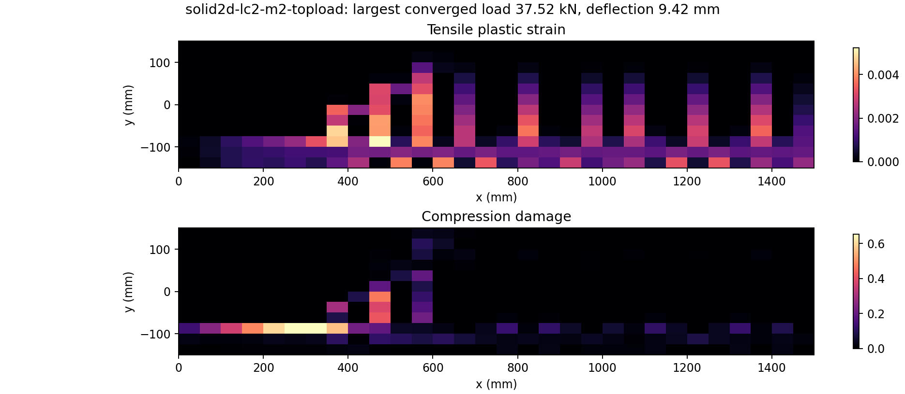
Figure C.2.14 LC2 Top Loading: 2D without Stirrups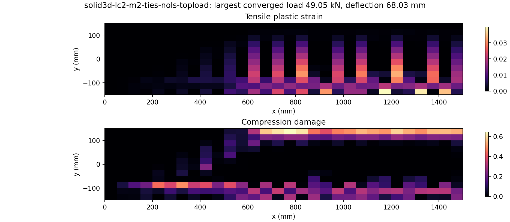
Figure C.2.15 LC2 Top Loading: 3D with Stirrups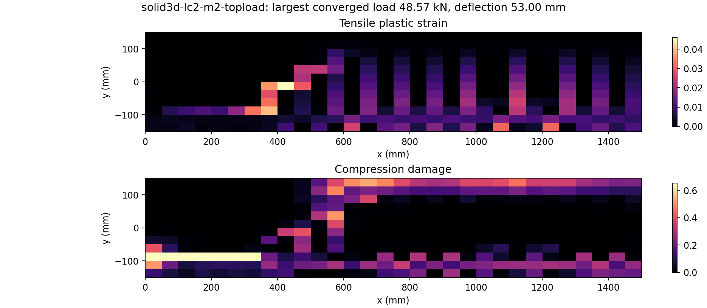
Figure C.2.16 LC2 Top Loading: 3D without Stirrups초기 단면 가력 LC1
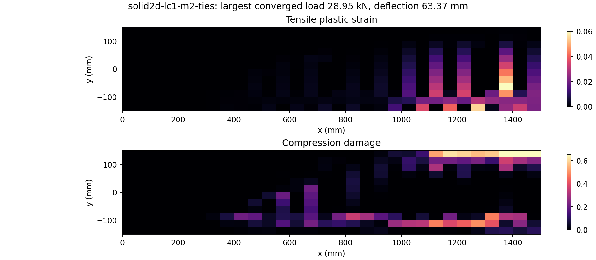
Figure C.2.17 LC1 Section-Wide Loading: 2D with Stirrups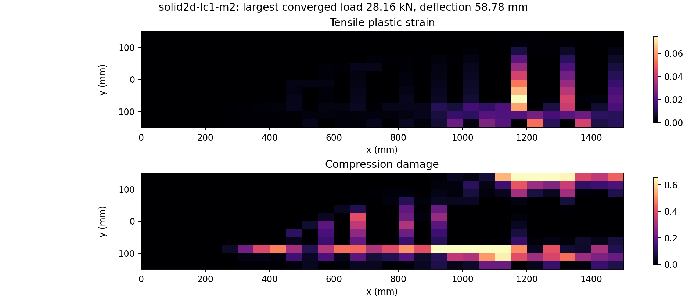
Figure C.2.18 LC1 Section-Wide Loading: 2D without Stirrups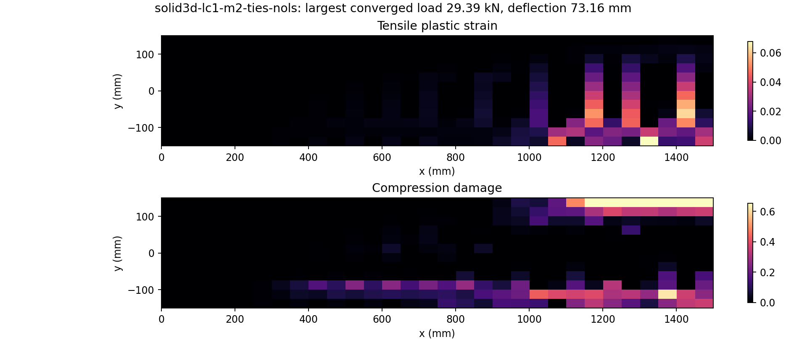
Figure C.2.19 LC1 Section-Wide Loading: 3D with Stirrups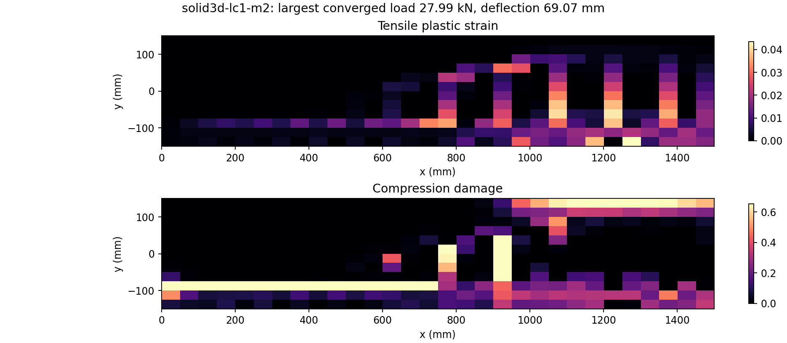
Figure C.2.20 LC1 Section-Wide Loading: 3D without Stirrups초기 단면 가력 LC2
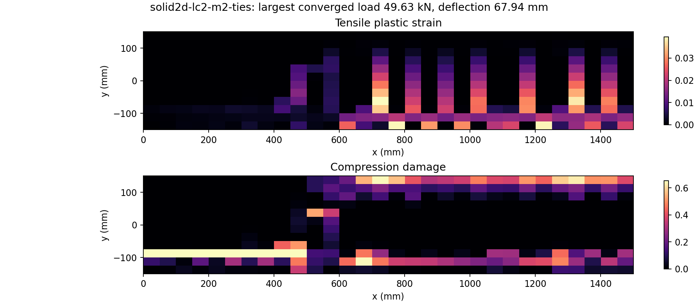
Figure C.2.21 LC2 Section-Wide Loading: 2D with Stirrups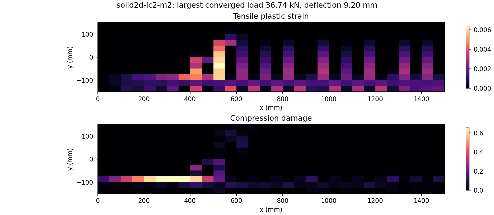
Figure C.2.22 LC2 Section-Wide Loading: 2D without Stirrups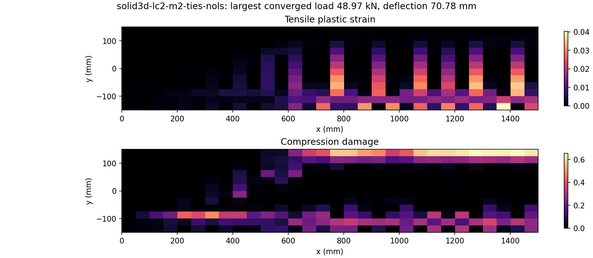
Figure C.2.23 LC2 Section-Wide Loading: 3D with Stirrups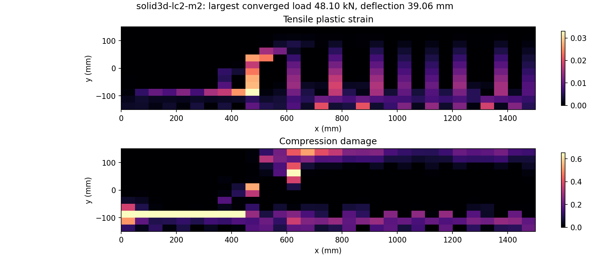
Figure C.2.24 LC2 Section-Wide Loading: 3D without StirrupsLC1 민감도
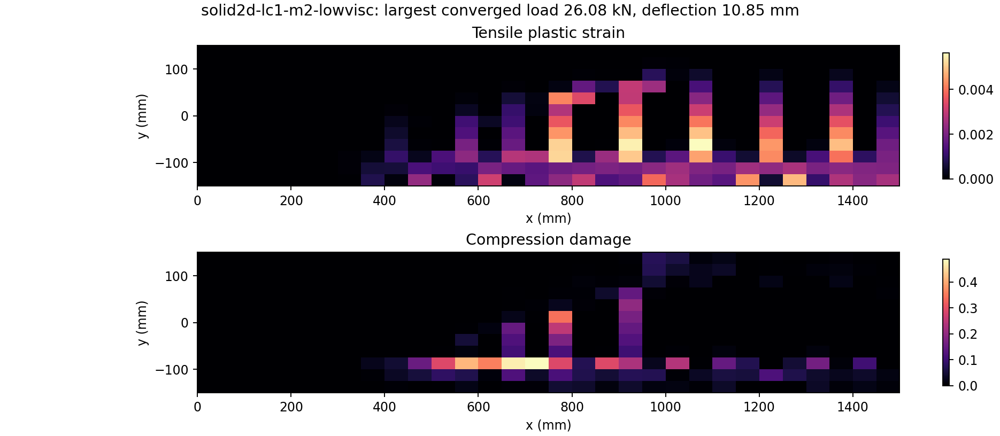
Figure C.2.25 LC1 without Stirrups: Lower Viscosity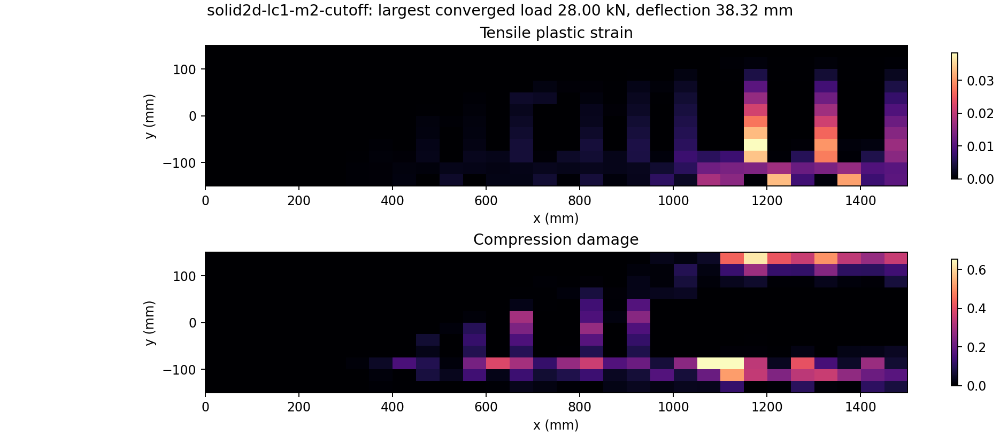
Figure C.2.26 LC1 without Stirrups: Compression Cutoff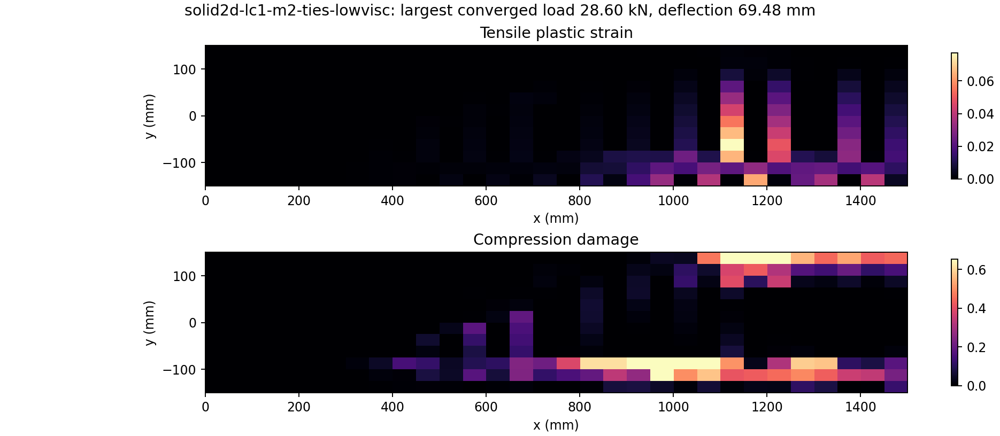
Figure C.2.27 LC1 with Stirrups: Lower Viscosity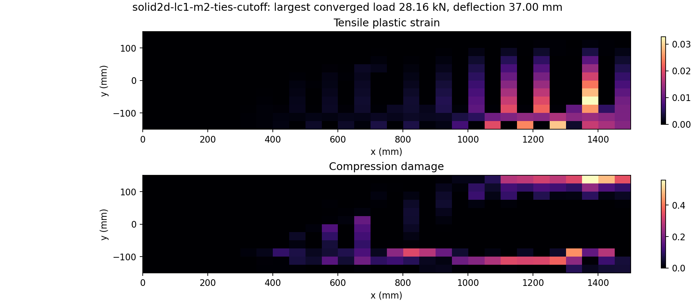
Figure C.2.28 LC1 with Stirrups: Compression Cutoff보요소 허용치 진단의 완료 결과
힘 상대 허용치 두 항을 모두 \(10^{-4}\)로 둔 초기 보요소 진단 2건도 정상 종료했다. 다만 최대 반력 불평형이 LC1 2.462%, LC2 0.249%로 커서 주 실험 비교에는 채택하지 않았다. 현재 주 보요소 계산의 해당 값은 각각 0.0301%, 0.0317%이다.
| 진단 입력 | 최대 한 점 하중 (kN) | 최대점 중앙 처짐 (mm) | 최대 반력 불평형 |
|---|---|---|---|
| beam-loose/beam-lc1-m2 | 30.686 | 70.816 | 2.462% |
| beam-loose/beam-lc2-m2 | 51.587 | 69.064 | 0.249% |
입력·CSV·HDB·로그는 diagnosis/beam-loose/에 복원했고 진단 수치 CSV로도 제공한다. 계산이 정상 종료했다는 것과 반력 평형 기준을 만족한다는 것은 별개다. 엄격한 허용치, 무점성 및 선탐색의 수동 중단 계산은 완료 결과 수에 포함하지 않는다.
입력 파일과 실행
자료는 Examples/C-RCBeam-ModelComparison/에 있다. original 폴더에 실험 Excel, 시험체 도면과 기존 예제를 보존한다. 현재 beam 입력은 beam-lc1-m2·beam-lc2-m2이며, 연속체 주 입력은 solid2d-lc1-m2-ties-topload·solid3d-lc1-m2-ties-nols-topload와 대응 LC2이다.
Examples\C-RCBeam-ModelComparison\run.bat beam-lc1-m2
Examples\C-RCBeam-ModelComparison\run.bat solid2d-lc1-m2-ties-topload
python Examples\C-RCBeam-ModelComparison\compare.py --topload
python Examples\C-RCBeam-ModelComparison\compare.py
python tools\dev\figures\plot_rcbeam_comparison.py
저장소의 tmp에서 실행하고 정상 완료한 출력만 사례 폴더에 복사한다. 같은 입력 이름으로 재실행하면 보존 결과가 덮어써진다.
위 두 compare 명령은 각각 상면 가력과 초기 단면 가력의 전체 완료 조건을 후처리한다. 기존 HDB 검사는 h5py가 필요하다. Help 그림과 상세 CSV는 python tools/dev/figures/publish_cdp_figures.py로 배치한다. beam-lc1-m2의 최초 실행 HDB·로그·해시는 original-results/beam-lc1-m2/에 별도 보존했으며, 현재 보존 CSV와 최초 실행 CSV는 동일하다.